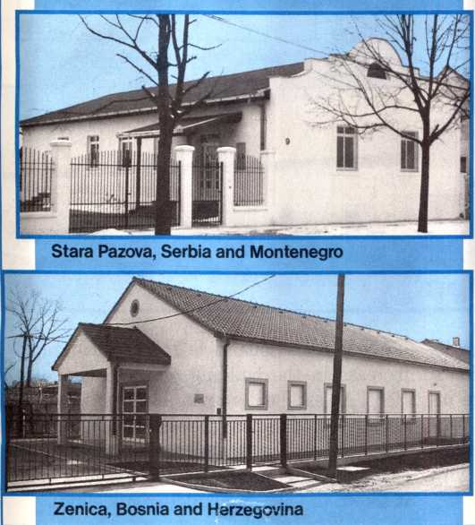

May 2003 For United States of America km-E Us 5/03 Vol. 46, No. 5
Entrusted With the Good News
1 How privileged we are to be entrusted with the good news of God! (1 Thess. 2:4) While some may refuse this powerful message, honesthearted ones are drawn to it as to a lovely fragrance. (2 Cor. 2:14-16) For those who accept and obey the good news, it means salvation. (Rom. 1:16) How should we care for this trust?
2 Jesus and the Apostles: Jesus put proclaiming the good news in first place. (Luke 4: 18, 43) Even when he was tired and hungry, his love for people and his appreciation for the message moved him to share it with others. (Mark 6:30-34) By word and example, he impressed upon the minds of his disciples the importance of the Kingdom-preaching work. —Matt. 28:18-20; Mark 13:10.
3 In imitation of Jesus, the apostles zealously declared the Kingdom message. Even when beaten and ordered to stop preaching, “they continued without letup teaching and declaring the good news.” (Acts 5: 40-42) The apostle Paul worked tirelessly in this work. (1 Cor. 15:9,10; Col. 1:29) He likened the privilege of sharing the good news to a debt owed to his fellowmen, and he was willing to forgo personal convenience in order to discharge it.—Acts 20: 24; Rom. 1:14-16.
4 Our Privilege Today: Appreciation for the sacred commission entrusted to us will move us to seek ways to expand our share in the preaching work. (Rom. 15:16) Edward, who was confined to a wheelchair, would sit at the entrance of a hotel and talk to guests about his faith. Desiring to do more, however, he had a special cab built on a pickup truck, and by means of this vehicle, he pioneered for many years, traveling thousands of miles in the process. Like Edward, many today have adjusted their circumstances to have a greater share in spreading the good news.
5 In imitation of Jesus and the apostles, may we today always give the preaching work priority in our lives. By so doing, we demonstrate our love for people as well as our appreciation of the good news entrusted to us.
Praise Jehovah by Witnessing Informally
1 Jehovah’s loyal servants seek opportunities to praise him each day. (Ps. 96:2, 3; Heb. 13:15) One way we can do that is by witnessing informally. Many worshipers of Jehovah today are thankful that someone introduced them to the Kingdom message through informal witnessing.
2 Giving an informal witness to one person often opens the way for others to hear the Kingdom message. For example, Jesus’ conversation with a Samaritan woman at Jacob’s fountain led to many more taking an interest in the good news. (John 4:6-30,39-42) While Paul and Silas were imprisoned in Philippi, they witnessed to the jailer, and the man’s entire household accepted the truth. —Acts 16:25-34.
3 Opportunities: What opportunities do you have to witness informally? Some do so when shopping, taking public transportation, or waiting at medical appointments. Others are able to witness during breaks at work or school. Simply having one of our Bible publications visible may prompt others to inquire about our beliefs.—1 Pet. 3:15.
4 Getting Started: A shy seven-year-old girl heard at a meeting how important it is for all to preach. So when going shopping with her mother, she put two brochures in her bag. While her mother was busy at the counter, the girl offered a brochure to a lady, who graciously accepted it. When asked how she got the courage to approach the lady, this shy girl replied: “I just said, Ready, Set, Go! And I went!”
5 To witness informally, we all need a spirit like that little girl’s. What can help us? Pray for the courage to speak up. (1 Thess. 2:2) Have in mind a question or comment on a topic of interest that you can use to initiate a conversation. Then trust that Jehovah will bless your efforts.—Luke 12:11, 12.
6 Witnessing informally to the people we meet each day brings praise to Jehovah and gives us joy. It may help someone get on the road to everlasting life.
Service Meeting Schedule
Week Starting May 12
Song 1
10 min: Local announcements. Selected Announcements from Our Kingdom Ministry. Using the suggestions on page 8, have two separate demonstrations of how to present the May 15 Watchtower and the May 22 Awake! In each case, both magazines should be offered as a set, even though only one is featured. Include mention of the donation arrangement.
20 min: Parents—Help Your Children to Progress. A talk discussing highlights from the Ministry School book, pages 9-12 and 21-38. Encourage parents to use some of this material in their family study, with the goal of training their children to progress in the ministry. Call attention to specific points that can be used to help young ones develop needed skills.
15 min: “Entrusted With the Good News.”* Arrange in advance for one or two publishers to explain briefly how they were able to adjust their personal circumstances so as to increase their share in the preaching work.
Song 46 and concluding prayer.
Week Starting May 19
Song 62
15 min: Local announcements. Accounts report. Discuss “International Kingdom Hall Building in Some European Lands.” Mention that construction of Kingdom Halls both in lands with limited resources and in the local branch territory is supported by contributions to the Kingdom Hall Fund.
15 min: Local needs.
15 min: “Praise Jehovah by Witnessing Informally.” Talk and audience discussion. When discussing paragraph 3, ask the audience what could be said to initiate a Bible discussion in some of the following situations: (1) while standing in a checkout line, (2) while using public transportation, (3) to a neighbor working in the yard, (4) to a workmate at your place of employment, and (5) to a classmate at school. Arrange in advance for a local experience that shows how the publisher successfully gave an informal witness.
Song 135 and concluding prayer.
Week Starting May 26
Song 174
10 min: Local announcements. Remind publishers to turn in service reports for May. Using the suggestions on page 8, have two separate demonstrations of how to present the June 1 Watchtower and the June 8 Awake! In each case, both magazines should be offered as a set, even though only one is featured. At the conclusion of one of the presentations, leave the tract Would You Like to Know More About the Bible? with a householder who did not accept the magazines.
10 min: Question Box. A talk. Briefly review some suggestions for telephone presentations that appeared in the February 2001 Our Kingdom Ministry, page 6, paragraphs 12-15, or others that have been effective in the local territory. 25 min: “God’s Word Is Truth.”* Use questions that are provided. Invite audience to comment on how they were helped to learn the truth when publishers used the Bible to answer their questions. When discussing paragraph 4, have a capable publisher demonstrate how to use the Bible on the initial call, using some of the suggestions appearing in the article “Handle God’s Word Aright.”—km 12/01 p. 1 pars. 3-4.
Song 188 and concluding prayer.
Week Starting June 2
Song 210
10 min: Local announcements. Review one or two suggestions from the January 2002 Our Kingdom Ministry insert for presenting
the Require brochure and Knowledge book.
20 min: Honorable Marriage—A Divine Requirement. Talk and audience discussion. In many lands, it is common for couples to live together without being legally married. Some claim that this has practical advantages. Highlight the Bible’s view, emphasizing that marriage is of divine origin, (rs pp. 248-9) Living together without the benefit of marriage is fornication. (fy p. 17) Contrary to what many believe, studies show that living together before marriage reduces the likelihood that the marriage will succeed. (p02 3/8 p. 29; p92 9/8 p. 28; p91 5/8 p. 28) Christians honor Jehovah by conforming to his standards. In doing so, they also benefit themselves—Isa. 48:17,18.
15 min: How Are You Benefiting? Audience discussion to be handled by the school overseer. Starting in January, we were introduced to a new format for the Theocratic Ministry School. Briefly review some of the new features of the school. Highlight the positive results seen so far. Have more enrolled in the school? Has there been a greater willingness to participate? How are the students benefiting from the new arrangements for providing counsel? Invite audience to relate how they have personally benefited so far and how they feel the new program will help them in the future.
Song 225 and concluding prayer.
* Limit introductory comments to less than a minute, and follow with a question-and-answer discussion.
February Service Report hr. hl Av. Av.
Number of: Hrs. Mags. R.V. Bi.St.
Sp'l Pios. 177 104.8 83.3 49.0 4.7
Pios. 89,251 59.7 38.0 19.9 1.9
Aux Pios 15,543 47.6 32.7 13.7 1.2
Pubs 878,992 8.5 7.3 3.4 0.3
TOTAL 983,963 Baptized: 1,505
© 2003 Christian Congregation of Jehovah’s Witnesses. All rights reserved. Our Kingdom Ministry (ISSN 1067-7259) is published monthly by Christian Congregation of Jehovah’s Witnesses; W. L. Van De Wall, President; W. H. Nonkes, Secretary-Treasurer; 2821 Route 22, Patterson, NY 12563-2237. Periodicals Postage Paid at Brooklyn, NY and at additional mailing offices. POSTMASTER: Send address changes to Our Kingdom Ministry, 1000 Red Mills Road, Wallkill, NY 12589-3299. Printed in U.S.A.
ational Kingdom Hall Building in Some European Lands C
Kingdom Hall Complex
Moscow, Russia
1 In recent decades the work of Jehovah’s Witnesses in a number of European lands, including Eastern Europe, was restricted. In most cases, the restrictions were quite severe. It was difficult to hold meetings openly, and having the use of a Kingdom Hall was nearly impossible. In recent years, however, “Jehovah has done a great thing in what he has done with us. We have become joyful.” -Ps. 126:3.
2 Beginning in 1983, the oppressive grip on Jehovah’s Witnesses began to loosen. By 1989, Poland and Hungary had granted Jehovah’s Witnesses legal recognition. In 1991, Jehovah’s Witnesses were granted legal registration in Russia. Since then, the work has prospered in Russia and in the former republics of the Soviet Union. Between March 1996 and October 1998, the Governing Body gave approval to 359 Kingdom Hall loan requests from branch offices overseeing 11 European lands.
3 As you look over the pictures in this insert, reflect on the great and wonderful things that Jehovah has done in behalf of his people. (Ps. 136:4) Take pleasure in knowing that contributions of the worldwide brotherhood are being put to excellent use, reflecting what Jesus stated, as recorded at John 13:35: “By this all will know that you are my disciples, if you have love among yourselves.”
4 Among the European countries benefiting from an arrangement to help build Kingdom Halls in lands with limited resources
km-E Us 5/03
OUR KINGDOM MINISTRY, MAY 2003
~ Bitola, Macedonia
Ui—!----d.
1
Strumica, Macedonia
Daruvar, Croatia
New Kingdom Halls in
Sokal, Lviv District, Ukraine
is Romania, where 36 Kingdom Halls have been built since July 2000. By using a standard pattern for almost all their Kingdom Halls, Ukraine built 61 in the year 2001 and 76 more in 2002. With the aid of moneys contributed to the Kingdom Hall Fund, hundreds of Kingdom Halls have been built in Bulgaria, Croatia, Macedonia, Moldova, Russia, and Serbia and Montenegro.
5 Building Kingdom Halls in some lands has not been easy, and much effort must be put forth before actual construction can begin. Often the process is time-consuming. Then, too, the cost of building a Kingdom
Hall in that part of Europe is much greater than in many parts of Africa or South America. However, because of the large increase in the number of those who worship Jehovah, hundreds of Kingdom Halls are still needed in European countries with limited resources!
6 How marvelous it is to see such rapid increase in the building of these Kingdom Halls! An excellent witness has been given neighborhoods where they have been built, many experiences show. In some areas, local authorities are impressed by the willing spirit shown in following building guidelines.
Rava-Ruska, Lviv District, Ukraine
7 Isaiah aptly prophesied about the increase in true worship at this time. Through the prophet God foretold: “I myself, Jehovah, shall speed it up in its own time.” (Isa. 60:22) Certainly, the last decade has proved to be Jehovah’s time for increase in Eastern Europe. May Jehovah continue pouring out his rich blessing upon our efforts to speed up the building of Kingdom Halls in many lands as we give further support to the Kingdom Hall Fund! This will result in many more Kingdom Halls being added in lands with limited resources. It will contribute to the growth of pure worship in many parts of Europe and to a greater witness being given to “the extremity of the earth.”—Acts 13:47.
ANNOUNCEMENTS
■ Literature offer for May: Offer individual copies of The Watchtower and Awake! When making return visits on interested people, which may include those who attended the Memorial or other theocratic events but who are not actively associated with the congregation, concentrate on placing the Worship God book. Every effort should be made to start a home Bible study, especially with individuals who have already studied the Knowledge book and the Require brochure. June, July, and August: Offer the Knowledge book or the Require brochure. When householders already have these publications, use another appropriate brochure that the congregation has in stock.
■ The presiding overseer or someone designated by him should audit the congregation’s accounts on June 1 or as soon as possible thereafter. When this has been done, make an announcement to the congregation after the next accounts report is read. ■ Donations made by check and put in the local Kingdom Hall contribution boxes for the worldwide work and the Kingdom Hall Fund should be made payable to “Jehovah’s Witnesses.” Donations made by check at district conventions and those sent to the branch office should be made payable to “Watch Tower.” The branch office financial address is Watch Tower Bible and Tract Society of Pennsylvania, c/o Office of the Secretary and Treasurer, 25 Columbia Heights, Brooklyn, NY 11201-2483.
■ Beginning with the May literature shipment, the annual supply of congregation forms is being shipped to congregations as forms become available. Instructions regarding forms distribution will appear on the shipment packing list. When there is more than one congregation in a Kingdom Hall auditorium, the literature coordinator should make sure that each congregation receives its supply of forms as soon as they arrive.
■ Congregation secretaries should maintain an adequate supply of the forms Application for Regular Pioneer Service (S-205) and Application for Auxiliary Pioneer Service (S-205b). These can be ordered on the Literature Request Form (S-14). Maintain at least a one-year supply. Review all regular pioneer application forms to make sure they are complete. If applicants cannot recall the exact date of their baptism, they should estimate the date and keep a record of it.
■ It is necessary for the branch office to maintain an up-to-date record of addresses and telephone numbers for all presiding overseers and secretaries. If there is a change at any time, the Congregation Service Committee should complete, sign, and send a Presiding Overseer/ Secretary Change of Address (S-29) form to the branch office promptly. This includes any changes in telephone area codes.
■ When witnessing by telephone, should we explain the donation arrangement?
When we give a witness in person, it may be possible to explain that the worldwide Bible educational work of Jehovah’s Witnesses is supported entirely by voluntary donations and that we are happy to accept such donations. However, no mention of donations or the donation arrangement should be made when witnessing by telephone, as this could be misinterpreted as a form of telephone solicitation. The ministry of Jehovah’s Witnesses is noncommercial in every way.—2 Cor. 2:17.
■ When witnessing by telephone, what should we do if a person requests that Jehovah’s Witnesses not call again?
The wishes of the person should be respected. A dated note with the name of the person should be placed in the territory envelope so that publishers will avoid calling that number in the future. Once a year, the list of people who have requested that we not call should be reviewed. Under the direction of the service overseer, experienced, tactful publishers can be assigned to contact these people to determine their current feelings. —See the June 1994 Our Kingdom Ministry Question Box.
God’s Word Is Truth
What to Say About the Magazines
1 “The substance of your word is truth,” wrote the psalmist. (Ps. 119:160) Through his inspired Word, Jehovah gives satisfying answers to life’s most important questions. He offers comfort and hope to those who are troubled. And he shows us how we can draw close to him. “Learning the truth from the Bible is like leaving a very dark and gloomy place and entering a clear, bright, and pleasant room,” said one appreciative woman. Do you endeavor to share the truth from God’s Word at every opportunity?
2 Transforming Power and Universal Appeal: Bible truth has the power to touch hearts and transform lives. (Heb. 4:12) A young woman named Rosa had become involved in prostitution, as well as alcohol and drug abuse. “One day, when I was at the very depths of despair,” she says, “a Witness couple spoke to me about how the Bible can help us solve our problems. I began to study God’s Word, which I found fascinating. Within a month I had the strength to make a clean, fresh start in life. Now that I had a purpose in life, I no longer needed the crutch of alcohol or drugs. And since I wanted so much to be Jehovah’s friend, I was determined to live by his standards. If it hadn’t been for the practical wisdom of God’s Word, I am sure that by now I would have put an end to my life.”—Ps. 119:92.
1. What important information does the Bible contain?
2. How does the Bible improve people’s lives?
3 Unlike most books today, the Bible appeals to people of ‘all nations, tribes, peoples, and tongues.’ (Rev. 7:9) God’s will is “that all sorts of men should be saved and come to an accurate knowledge of truth.” (1 Tim. 2:4) Therefore, we should never presume that a person will be unreceptive to the good news simply because of his background. Rather, share the Kingdom message with all, doing so directly from the Bible whenever possible.
4 Feature the Scriptures: There are many opportunities to use the Bible in the ministry. When presenting the magazines, try to include the scripture that appears in the suggested presentation. When using the literature offer for the month, some find it effective to include the reading of a carefully selected scripture in their opening remarks. When making return visits, share one or more Bible texts each time to help the householder progressively acquire accurate knowledge. When conducting a Bible study, center the discussion on the key scriptures. When not sharing in the formal ministry, have a Bible handy to use when opportunities arise to witness informally. —2 Tim. 2:15.
5 May we help others benefit from the motivating power of God’s Word of truth by using the Bible at every appropriate opportunity in our ministry. —1 Thess. 2:13.
3. Why should we not hold back from sharing the Bible’s message with others?
4. How can we use the Bible when giving a witness?
5. Why should we strive to use the Bible in our ministry?
™WATCHTOWER May 15 ANNOUNCING JEHOVAH ’S KINGDOM
“Daily we hear reports of violence. Do you think such conditions ever existed before? [Allow for response.] Notice what the Bible says. [Read Matthew 24:37.] Noah’s days were so bad that God swept away all but Noah and his family. This magazine shows how those events have meaning for us today.”
Awake! May 22
“Today, insect-borne disease is one of many dangers to our health. Did you know that there are measures we can take to protect ourselves? [Allow for response.] This magazine discusses these measures, as well as the Bible’s promise of a time when there will be no more sickness.” Conclude by reading Isaiah 33:24.
™VK&TCHTOWER June 1 Announcing Jehovah -s Kingdom
“Reports of mismanagement of donated funds have caused some to wonder if it is wise to give to charity. Yet, there are so many people in need. What do you think can be done? [Allow for response. Then read Hebrews 13:16.] This magazine explains the kind of giving that pleases God.”
Awake! June 8
“It appears that people today do not value morals and good manners as they did in years past. Have you observed that to be true? [Allow for response.] Interestingly, the Bible made this prediction. [Read 2 Timothy 3:1-5.] This issue of Awake! discusses why human values are changing and what the future holds.”
8